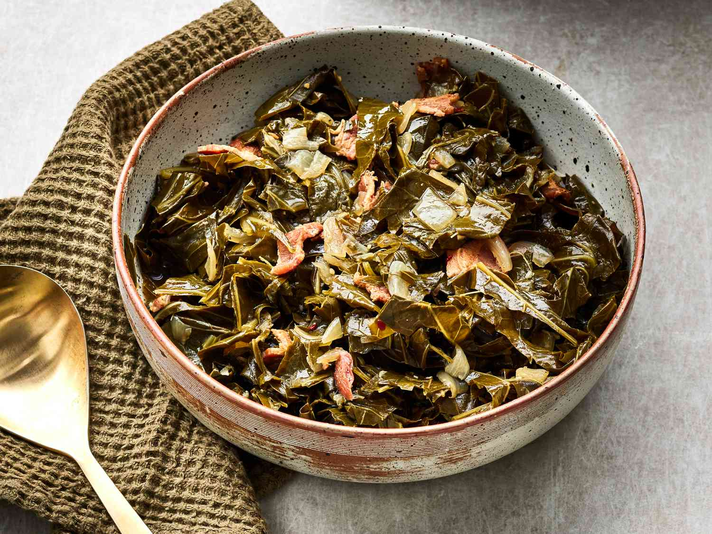

Belonging to the Brassica oleracea family, collard greens are a type of green leafy vegetable that is characterized by thick leaves with tough stems and a slightly bitter flavor that is eliminated through cooking. This vegetable has long been appreciated in the traditional cuisine of the American South.
Meal prep time : 1 hour 10 minutes
Servings : 6